Combinational Logic Circuits¶
Abstract
-
布尔代数(Boolean)的概念
Boolean Algebra- 变量与真值的关系
Binary Variables - 二值逻辑和门
Binary Logic and Gates - 三种基本运算
Three basic logic operations
- 变量与真值的关系
-
基本运算法则与电路符号
Operation Definitions and Logic Gate Symbols - 基本运算公式、规则、反演，对偶规则
basic identities, DeMorgan’s Theorem, Dual Theorem - 基本逻辑电路与其逻辑特性。与，或的开、关门特点，异或的同相、反相性质
Logic Gates and implementation, AND, OR gates used to control gate open or close, XOR gates used as a controllable invertor -
逻辑函数的化简
Simplification- 化简的标准、公式化化简、最小项，最大项及其相互关系、卡诺图化简、质蕴涵项、必要质蕴涵项，门输入成本
Boolean Algebraic Proof, Boolean Function Optimization, Canonical Forms, Minterms, Maxterms and their relationship, K-map simplification, Prime Implicants, Gate input Cotes - 含任意项函数化简
Don't Cares in K-Maps
- 化简的标准、公式化化简、最小项，最大项及其相互关系、卡诺图化简、质蕴涵项、必要质蕴涵项，门输入成本
-
不同函数形式的变换及与最小项的关系
SOM form, POM form, Standard forms, SOP form, POS form, Conversion between forms - 函数的五种表示形式：真值表、逻辑解析式、波形图、卡诺图、逻辑电路图
Truth Table, Boolean Equations, Wave form, K-map, Logic Diagram - 高阻输出(三态门)
Hi-Impedance Outputs, Three state buffer
Gate Circuits and Boolen Equations¶
Binary Logic and Gates¶
Binary Logic¶
逻辑运算的对象是布尔变量 如True/False, On/Off, Yes/No, 1/0, 高电压/低电压
主要运算如下：
A AND Bdenoted by \(A\cdot B\)或者\(AB\)A OR Bdenoted by \(A + B\)NOT Adenoted by \(\overline{A}\) or $ \sim{A}$A NOR Bdenoted by \(\overline{A+B}\)A NAND Bdenoted by \(\overline{A\cdot B}\)
逻辑函数的具体实现:

Logical Gates（逻辑门）¶
硬件层面上实现布尔代数的逻辑单元。其操作对象为高低电平
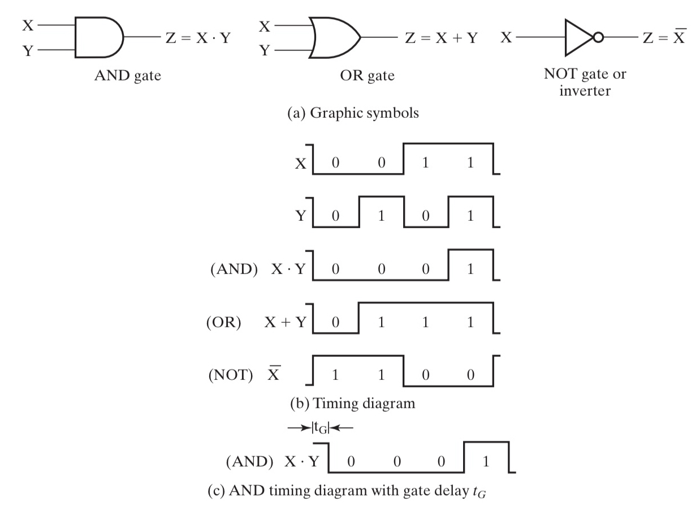
(a)是三种常用逻辑门的符号，(b)为三者在 时序图 (timing diagram)中的状态，(c)为在延时效应下的时序图
gate delay
 由于物理层面的实现，每个门电路在改变输入后，输出的改变都会有一定的延迟
很多时候我们会使用更昂贵的器材来获得更小的 delay.
由于物理层面的实现，每个门电路在改变输入后，输出的改变都会有一定的延迟
很多时候我们会使用更昂贵的器材来获得更小的 delay.
另：非门更多被称为 inverter 而不是 NOT
MOS管
- N-type

等效于常开开关
- P-type
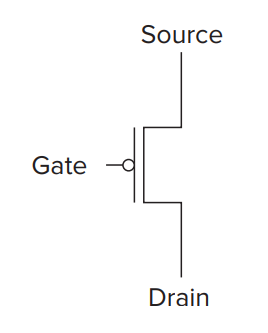
等效于常闭开关
下面是或非门、与非门和非门：

通用门(Universal Gate):功能完全的，能够表示其他所有门的逻辑门。只有NAND和NOR是通用门
Question
- 能不能把两个逻辑门的输出接在一起?(如 NAND 和 NOT 的输出)?
-> 可能一个输出是 1, 一个输出是 0. 短路, 芯片烧掉, 冒烟. - 能不能把 NOT 门中变为 X 和 Y 两个输入分别对应 CMOS 和 NMOS?
->不能. 当 X,Y=1,0 时上下都接通, 短路. 当 X,Y=0,1 时输出角处于 HZ(高阻态).
三态门允许器件输出这样的结果.
Boolen Algebra¶
基础运算律¶
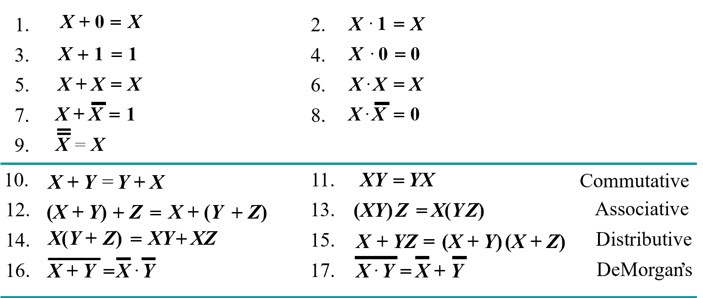
(左右公式是对偶的)
注意到公式15似乎有些反直觉，但实际上这只是（为了少写一些括号）人为规定的运算优先级问题，本质仍是And 对 Or 的分配律
precedence: （） > NOT > AND > OR
AND 和 OR 地位上是对等的，但是优先级不同
推广¶
 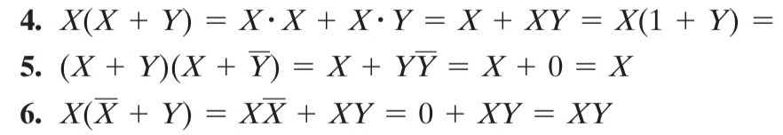
实际上前三个和后三个互为对偶
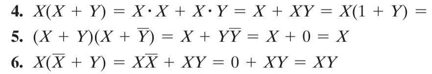
实际上前三个和后三个互为对偶
对偶函数(dual function)和反函数(complement of function)¶
注意
区分“对偶函数”和“反函数”
对偶函数是指将原函数中的 AND 和 OR 互换。
反函数是指将原函数中的 AND 和 OR 互换，同时将所有的常数和变量取反。（也可看做是在对偶基础上进一步取反）
注意为保证运算顺序，有时需要加括号。
example
- 原函数：\(F=\overline{A}B+C\overline{B}\)；
- 其对偶函数：\(F=(\overline{A}+B)(C+\overline{B})\)；
- 其反函数：\(F=(A+\overline{B})(\overline{C}+B)\)。
一致性定理（Consensus Theorem）¶
主要思想是为了合并而裂项： \(XY+\overline{X}Z+YZ=XY+\overline{X}Z+(X+\overline{X})YZ=XY+\overline{X}Z\)
课上的例子¶
Boolean Algebraic Proofs 1
AB + A'C + BC = AB + A'C (Consensus Theorem)
Justification 1: 1 . X = X
Justification 2:
X + X’ = 1
原式 = AB + A’C + ABC + A’BC X(Y + Z) = XY + XZ (Distributive Law)
= AB + ABC + A’C + A’BC X + Y = Y + X (Commutative Law)
= AB . 1 + ABC + A’C . 1 + A’C . B X . 1 = X, X . Y = Y . X (Commutative Law)
= AB (1 + C) + A’C (1 + B) X(Y + Z) = XY +XZ (Distributive Law)
= AB . 1 + A’C . 1 = AB + A’C X . 1 = X
最好将每一步用的公式写出来
Boolean Algebraic Proofs 2
(X+Y)'Z + XY' = Y'(X+Z)
原式 = X’ Y’ Z + X Y’ (A + B)’ = A’ . B’ (DeMorgan’s Law)
= Y’ X’ Z + Y’ X A . B = B . A (Commutative Law)
= Y’ (X’ Z + X) A(B + C) = AB + AC (Distributive Law)
= Y’ (X’ + X)(Z + X) A + BC = (A + B)(A + C) (Distributive Law)
= Y’ . 1 . (Z + X) A + A’ = 1
= Y’ (X + Z) 1 . A = A, A + B = B + A (Commutative Law)
留意定理 15
Boolean Algebraic Proofs 3
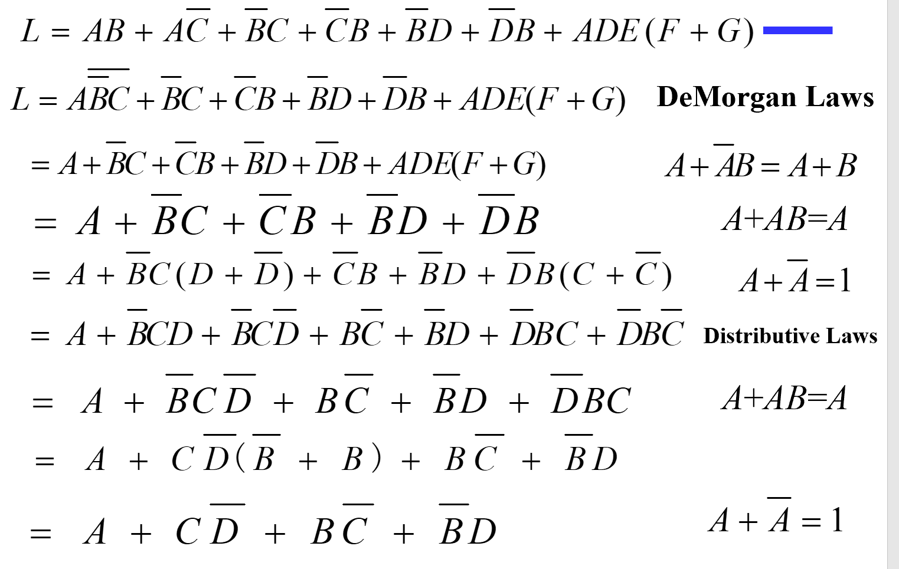
Standard Forms & Canonical Forms¶
真值表相同的布尔函数写法多而杂，我们希望能找到一种标准的写法。
由此引入了两种标准的写法：
-
标准形式（Standard Forms）: 包括SOP和POS
-
规范形式（Canonical Forms）: SOM和POM。
二者可以互相转化。
初学的时候或许结合一个真值表来理解会更好一点。
考虑一个由三个命题变量构成的复合命题，它的真值表如下：
| Index | X | Y | Z | Output |
|---|---|---|---|---|
0 / 000 |
0 |
0 |
0 |
0 |
1 / 001 |
0 |
0 |
1 |
0 |
2 / 010 |
0 |
1 |
0 |
1 |
3 / 011 |
0 |
1 |
1 |
0 |
4 / 100 |
1 |
0 |
0 |
1 |
5 / 101 |
1 |
0 |
1 |
1 |
6 / 110 |
1 |
1 |
0 |
0 |
7 / 111 |
1 |
1 |
1 |
1 |
注意到index的二进制写法各位数字对应的正是X、Y、Z的取值，0表示取反，1表示原命题，实际上正是用\(m_{index}\)来表示最小项，\(M_{index}\)来表示最大项。
最小项之和（SOM）& 最大项之积（POM）¶
- 最小项Minterms
Minterms are AND terms with each variable present in either true or complemented form.
即：所有变量的取值组合中，使得函数值为1的取值。
对应上表中所有Output为1的行：\(m_2=\overline{X}Y\overline{Z}\)、\(m_4=X\overline{Y}\overline{Z}\)、\(m_5=X\overline{Y}Z\)、\(m_7=XYZ\)。
- 最大项Maxterms
Maxterms are OR terms with each variable present in either true or complemented form.
即：所有变量的取值组合中，使得函数值为0的取值。
对应上表中所有Output为0的行：\(M_0=X+Y+Z\)、\(M_1=X+Y+\overline{Z}\)、\(M_3=X+\overline{Y}+\overline{Z}\)、\(M_6=\overline{X}+\overline{Y}+Z\)。
区分
最小项中XYZ的是否取反与index二进制各位数字相对应，
最大项中XYZ的是否取反与index二进制各位数字相反
-
最小项之和（SOM）：
将所有结果为 1 的 minterm 取或，得到的就是原函数的表达式。 -
最大项之积（POM）： 将所有结果为 0 的 maxterm 取与，得到的也是原函数的表达式
两种写法等价，且不重不漏。（即一旦确定其中一个，另一个也可得出）
标准形式（SOP & POS）¶
- Standard Sum-of-Products (SOP) form: 积式的和（析取范式）
- Standard Product-of-Sums (POS) form: 和式的积（合取范式）
Info
Standard Forms 用来做电路实现, 一般会进行 SOM POM 化简, 但会省略一些东西. 依然按照 Standard Order, 但每一项中不一定需要所有变量.
SOP POS 也被称为两极函数.
如 SOP: \(ABD+\overline A \overline B C +B\), POS: \((A+B)\cdot (A+\overline B+\overline C)\cdot C\) 他们路径上最多只需要经过两个电路门, 这称为二级电路.
反观 \((AB+C)(A+C), AB\overline C+AC(A+B)\) 最多就需要经过三个电路门.
- 为什么需要降低电路门的级数?
电路门有延迟, 经过的电路门越多延迟越大, 意味着最后电路做出来的计算机不易提高功率.
电路实现和优化（Circuit Optimization）¶
在实际情况中，若直接通过标准形式实现电路，有时会导致成本过高以及电路冗余。因此引入“卡诺图（Karnaugh map）”来优化逻辑电路。
在正式引入前，还需要定义一些定量衡量电路成本的量，亦即成本标准（cost criteria）
主要有以下三种：
- L(Literal cost) ：按照字面量计算
Note
就是单纯的字面量，重复出现也要计算
Eg
-
\(F=BD+A\overline BC+ A\overline C\overline D\) L=8
-
\(F=BD+A\overline BC+ A\overline B\overline D + AB\overline C\) L=11
-
G(Gate input cost) ：按照门输入计算且不算非门
-
GN(Gate input cost with NOTs)：按照门输入计且计算非门
Note
所谓按照门输入，亦即按照逻辑门输入的引脚个数计算。单个字面量的引脚已经计算在了L中，这里G只需要在L的基础上再加上字面量运算后所得结果作为输入传入下一逻辑门的引脚个数
在计算非门时，重复出现的只记一次
Eg
-
\(F=BD +A\overline BC+A\overline C\overline D\) G=8(L)+3=11, GN=11+3=14.
-
\(F=BD+A\overline BC+A\overline B\overline D+AB\overline C\) G=11+4=15, GN=15+3(only BCD)=18.
图例
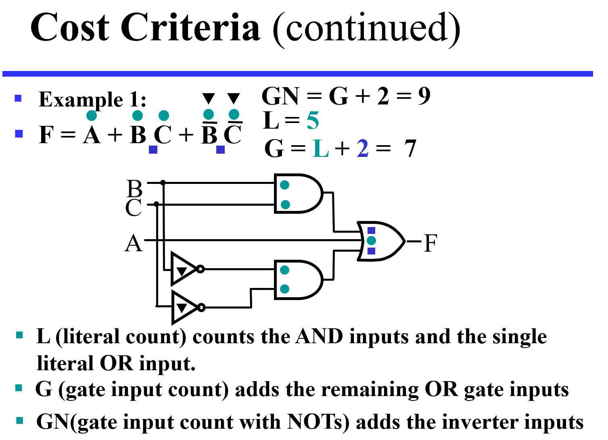 + 绿色圆点表示一级输入引脚 + 蓝色方点表示二级输入引脚 + 黑色三角表示非门
Karnaugh Maps(卡诺图)¶
优化逻辑表达式，最好能减少门电路。考虑到逻辑运算律中有这样一条：\(AB+A \overline B = A\)，那么只要两个最小项之间只差一个字面量的非，则可以合并。（最大项根据$ (A+ \overline B)(A+B) = A$,也有相应结论）
这时就会发现“只差一个”和上一章中的格雷码的思想相同，那么似乎只要将最小项的index按照格雷码的顺序排列，似乎就可以很方便的进行合并。
事实上这样排出的表格就是所谓的卡诺图
Two-Variable Maps¶
Eg
| F=x+y | y=0 | y=1 |
|---|---|---|
| x=0 | 0 | 1 |
| x=1 | 1 | 1 |
表头是变量的真值，表格中的1意即含有该项，0意即不含有该项。
事实上，1的位置就是最小项的位置，而0的位置就是最大项的位置。
此图中最小项可以合并为 \(F=x+y\)
Three-Variable Maps¶
注意这里的卡诺图是按照格雷码的顺序排列的，因此并不一定按照自然数顺序排列。 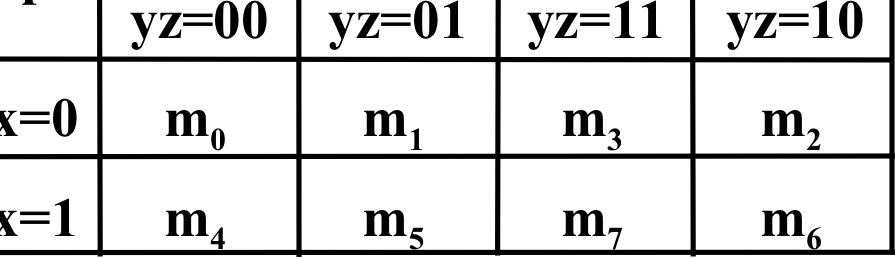
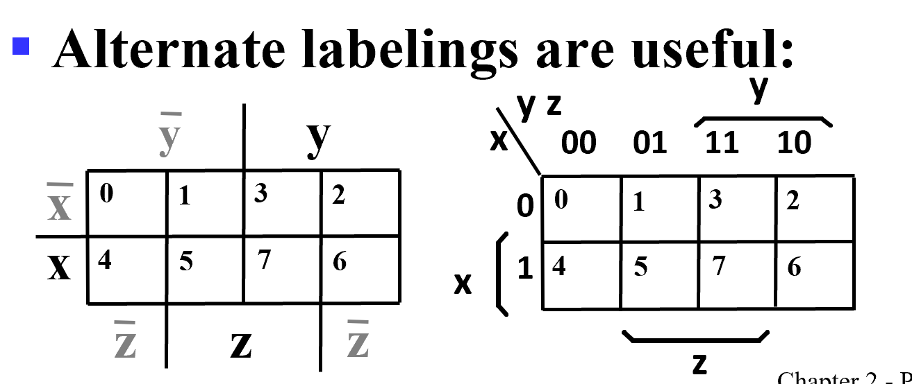
那么具体如何合并？先看点例子
Eg
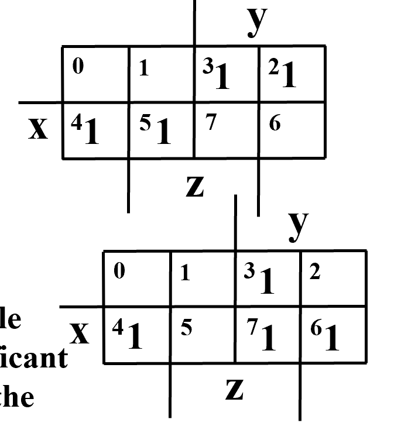
- 注意到 3 2 格都是 1, 因此 \(\bar xy\bar z + \bar x y z = \bar xy\), 没有变化的变量可以保留, 变化了的变量可以消掉. 同理 4 5 格可化为 \(x \bar y\)
- 3 7 格: \(yz\); 6 7格: \(x y\); 4 6 格\(: x\bar z\)
具体来说：
在图中寻找尽可能大的、边长是2的幂次方的矩形，且矩形所覆盖的有且仅有最小项（or 最大项，但一般都是最小项）然后合并
rules


Eg

Four Variable Maps¶
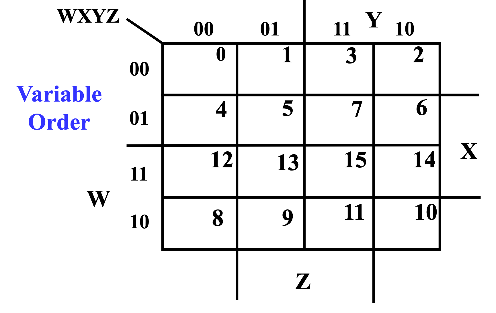 注意后两行顺序
Example
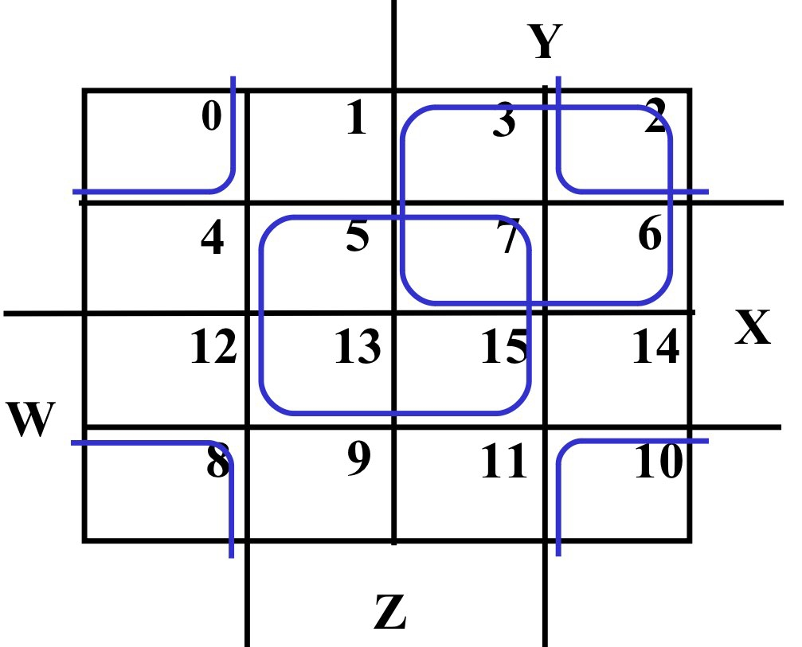
Advice
老师说四边都可以卷起来，我觉得似乎可以看成一个球的平面化？总之不要忽略边角上可以连成矩形的最小项
Don't Cares(无关项)¶
在需要化简的逻辑函数中未给出定义的项： + 输入最小项时从未出现 + 函数输出时不会用到 这样的项在卡诺图中用X表示，理论上在化简时怎么定义都可以，实际上为了化简方便，如果定义为1时能做出更大的矩形，那么便定义为1，否则定义为0
下面是一例
BCD 5 or More
定义这样一个函数：输入的BCD码表示的数字大于等于5时返回1
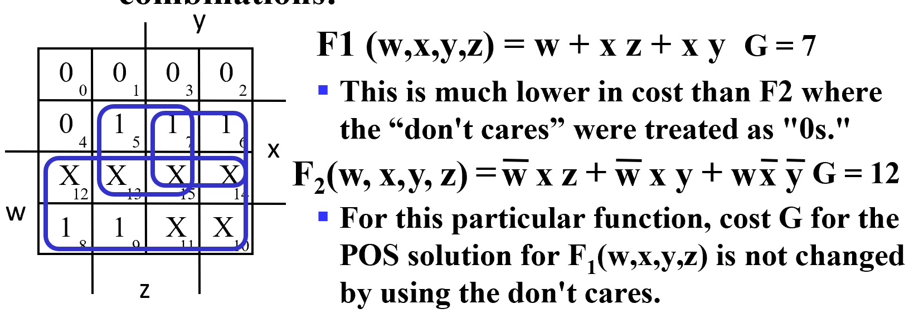
X 可圈可不圈
implicant(蕴含项)、prime implicant(主蕴含项) essential prime implicant(基本主蕴含项)¶
- 蕴含项：你找到的任意一个矩形
- 主蕴含项：对某个 "1" 而言包括它的最大矩形。（此时将无关项X当作1处理）
- 基本主蕴含项：对某个 "1" 而言，如果它的主蕴涵项只有一个，那么它是基本的。
基本步骤是：
- 画出所有圈
- 找到极大圈（不会被更大的圈包围）
- 选出基本的（含有至少一个1是只被自己圈住的
有点病娇） - 处理剩下的 1
Eg
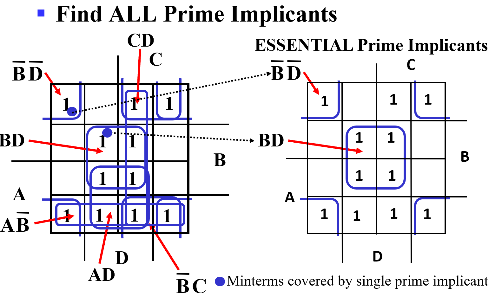
哪些 1 只被一个主蕴含圈包围，那么它一定是基本主蕴含项
Eg
Find all prime implicants for:
\(G(A,B,C,D)=\sum\limits_m(0,2,3,4,7,12,13,14,15)\)
Hint: There are seven prime implicants!
Prime Implicants are AB, B C' D', A' C' D', A' B' D', A' B' C, A' C D, B C D. ony AB Essential.
Advice
定义这些概念的意义在于：
- 对于任意函数，一定存在主蕴含项
- 同一个函数的化简结果可能不同，但一定都含有基本主蕴含项
Multi-Level Circuit Optimization (多级优化电路)¶
两级门的延迟低，但 cost 高。
Transformation Examples

Integrated Circuits(集成电路)¶
- Integrated circuit (informally, a “chip”) is a semiconductor crystal (most often silicon) containing the electronic components for the digital gates and storage elements which are interconnected on the chip.
-
Terminology - Levels of chip integration
- SSI (small-scale integrated) - fewer than 10 gates
- MSI (medium-scale integrated) - 10 to 100 gates
- LSI (large-scale integrated) - 100 to thousands of gates
- VLSI (very large-scale integrated) - thousands to 100s of millions of gates
Technology Parameters(一些技术参数)¶
主要是一些门电路和其负载能力相关的参数
- Fan-in 扇入系数 – 一个门的输入端的上限
理想情况一个门的输入可以接无数个门的输入，但实际上因为每一个门的输入端都会花费一些电流，而门输出的电流是有限的，从集成电路本身会要求一个门的输出最多能拉多少门的输入。 -
Fan-out 扇出系数 – 一个门的输出端在不降低工作性能的情况下能够负载的最大门数
Question
逻辑设计时，我们发现总是一个门的输出带了很多门的输入，那么是否可以带任意多的输入？
Info
一个门的输出不能接到太多门的输入上去，门输入会消耗输出电流。一般会用 buffer 做缓冲
-
Transition time - 过渡时间。 门输出从逻辑 1 到 0 记为 \(t_{HL}\),从逻辑 0 到 1, \(t_{LH}\)
输出端带的门输入越多，电平上升（0-1）/下降（1-0）时间就越长。我们会限制过渡时间，设置 maximum fan-out
-
Cost for a gate - 电路成本
与芯片面积成正比，而芯片面积大致与门输入端个数成正比（忽略连线）
-
Propagation Delay -传输延迟
衡量输入端变化到对应输出变化所需时间。与过渡时间一样，也分两种。 \(t_{PHL}\) 和 \(t_{PLH}\) ，两种时间或许不同
实际计算的是输入输出变化中点的时间差 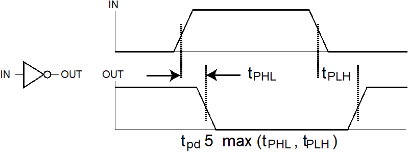
另外，也可以引入 \(t_{pd}\) 来统一表示二者。
取 \(t_{pd} = \frac{t_{PHL}+t_{PLH}}{2}\) 或者 \(t_{pd} = max(t_{PLH},t_{PHL})\)
注意最终看的是输出端
传输延迟计算
- 多极门的传输延迟：从输出向输入反推
Eg
如果这里有 n 个非门串联

计算 \(t_{PHL}\) 需要 \(t_{3PHL} + t_{2PLH} + t_{1PHL}\)
从结果倒推
如果只求 \(t_{pd}\) 只需要把每级的 \(t_{pd}\) 相加即可。
-
Delay Models(模型)
- Transport delay - 只是根据延迟定义构建的模型，相对于理想情况输出整体后移。
-
Inertial delay（惯性延迟） - 除了输出往后移，在惯性延迟下，很窄的脉冲（小于 rejection time（抑制时间）的时间内的突然变化）会被消除掉。
Example

蓝线是正常的传输延迟, 黑线是小于等于rejection time的惯性延迟.
因此 ab de 这个脉冲会被掩盖掉
引入惯性延迟后，实际电路中的延迟可能会导致输出不稳定。
考虑惯性延迟、竞争、冒险

（实际上这是一个经典的由S控制输出端是A或B的二选一选择器）
- 最开始 S 由 0->1 后 0.9s Y 从 0->1
- S 从 1->0 后下方的与门 0.4s 后会从 1->0, 但上方的与门 0.6s 后才会从 0->1. 但 0.9s 后 Y 才会 1->0, 此后再过 0.2s(共 1.1s) 后 Y 从 0-> 1.
这里 Y 出现了一个小尖峰，我们称之为电路产生的冒险。
S 的两条路径我们发现延迟不同，这种我们称之为电路中的竞争。
传输延迟与扇出系数有关： The fan-out loading a gate’s output affects the gate’s propagation delay。
标准负载SL
衡量负载的人为规定的单位。大小等于一个非门贡献的负载压力
Example
带有4个输入端的与非门传输延迟计算:
\(t_{pd} = 0.07 + 0.021 SL\) ns
For SL = 4.5, tpd = 0.165 ns
由工艺程度+负载情况决定
-
Cost/Performance Tradeoffs（开始拉扯）
成本还是性能，这是个问题
Eg
-
方案1：与非门G，20个标准负载，延迟0.45ns，成本是2.0
-
方案2：与非门G 和 缓冲门buffer H，总共20个标准负载，延迟0.33ns，但总成本3.5
不同的要求对应不同的选择：
- The cost of this portion of the circuit cannot be more than 2.5
- The delay of this portion of the circuit cannot be more than 0.40 ns
- The delay of this portion of the circuit must be less than 0.40 ns and the cost less than 3.0
ans: 1. No buffer
2. Use buffer
3. Irrelevant - buffer needed to satisfy delay constraint, but cannot satisfy cost constraint. -
Additional Gates and Circuits¶
Other Gate Types¶
- Primitive gate - a gate that can be described using a single primitive operation type (AND or OR) plus an optional inversion(s).
- Complex gate - a gate that requires more than one primitive operation type for its description
Primitive gate¶
Buffer(缓冲门)¶
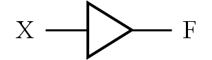
实现 \(F = X\) 没有逻辑功能，但有很强的带负载的能力，能够拉高电平，降低传输延迟。
NAND（与非门）和 NOR（或非门）¶
四个晶体管即可构成一个两输入的与非门/或非门；
六个晶体管构成一个三输入的与非/或非门
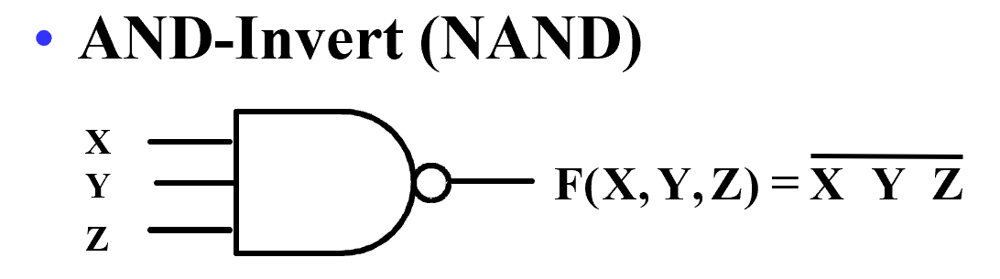 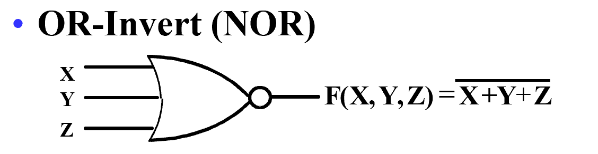
与非也可以由德摩根律转化为 \(F=\overline{X} + \overline{Y} + \overline{Z}\)
本身可以实现与门的逻辑， 再加上一个非门即可实现或门的逻辑
或非类似。
逻辑运算和人为的电路设计中一般不直接用与非/或非，因为不满足交换、结合律，而在工艺映射中会将与、或、非转化为与非和或非门，并应用于最终的电路实现。
Complex gate¶
Exclusive OR/ Exclusive NOR （异或/同或（异或非））¶
denoted by XOR and XNOR
-
Definitions:
- \(X\oplus Y = X\ \overline Y +\overline X \ Y\)
- \(\overline{X\oplus Y} = X\ Y +\overline X \ \overline Y\)
- 二者可以相互转化：\(\overline X \oplus Y = X\ Y + \overline X \ \overline Y = \overline{X \oplus Y}\)
很多时候我们把同或当作比较器使用。二者相等输出为1，否则输出为0.
相关公式：
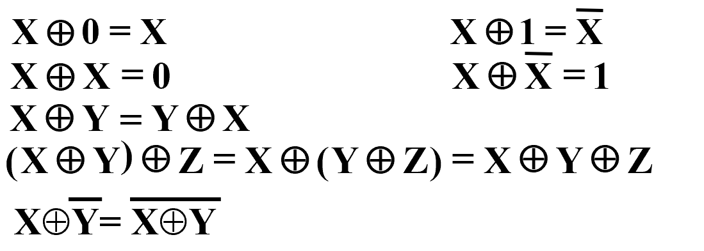
注
第一行中的两个公式意味着，异或门可以用于构建可控制的非门
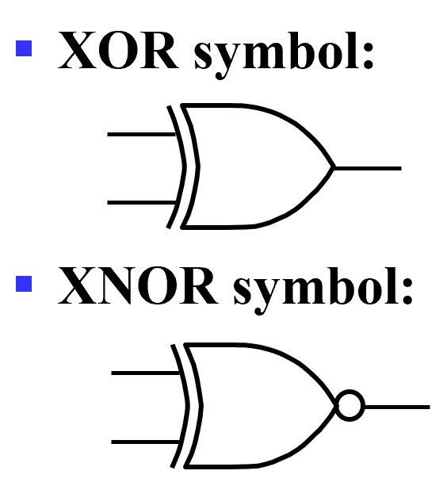
bubble
- 在基本门中，这个小圆圈可以理解为取非
- 在一些电路模块中，这个小圆圈多数情况下代表负逻辑：低电平有效，高电平无效。
- 异或的电路实现：

上面采用非或逻辑实现，下面采用四个与非实现
下面的实现需要 \(4\times 4=16\) 个晶体管。但实际中最简单只需要 10 个晶体管，就可以构造出 XOR 门。
Odd and Even Functions(奇函数和偶函数)¶
-
严格来说，只有两变量的异或。对于多于两个输入的，我们用奇函数/偶函数代替。
对于三变量的异或 \(X\oplus Y\oplus Z = \overline X \ \overline Y \ Z + \overline X \ Y \overline Z + X \ \overline Y \ \overline Z + X\ Y\ Z\) 卡诺图无法再化简1 1 1 1 我们称它为奇函数，因为 minterm 里 1 的个数(\(=\sum m(1(001),2(010),4(100),7(111))\))为奇数。其反函数为偶函数。
-
奇函数：最小项有且仅有二进制下标有奇数个1的项。如双变量中
\(F = m_1 + m_2 + m_4 + m_7\) 是奇函数
-
偶函数：反之即为偶函数。
表现在卡诺图中，奇偶函数对应的最小项类似于分占黑白两色的国际象棋棋盘格
Property
xor 都是奇函数.
如 \(F=(X\oplus Y)\oplus Z \\ F=(W\oplus X)\oplus (Y\oplus Z)\)
求非即为偶函数
奇偶函数的用途：
奇偶校验：传输若干个数据位，增加一个数据位，用来表示数据位的奇偶性。输入和输出端的奇偶位应该相同。
Eg

奇函数可以产生偶校验位
Hi-Impedance Outputs(高阻输出)¶
三态门： 输出有三态：0, 1, and Hi-Z
下面是三态缓冲门：
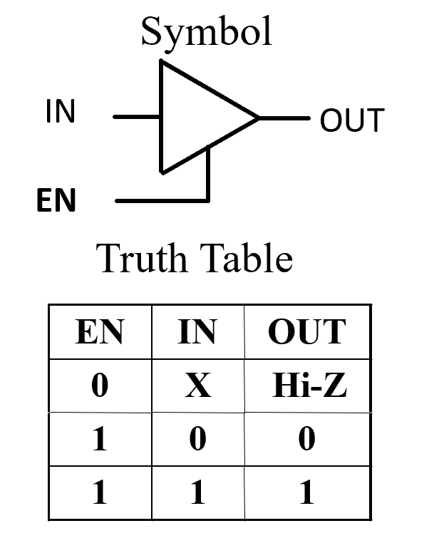
EN称之为使能端，EN为0时输出始终为高阻态，EN为1时才会有正常的逻辑输出。
- 把两个三态门的输出接在一起：
Resolution Table
| B1 | B0 | OUT |
|---|---|---|
| 0 | Hi-Z | 0 |
| 1 | Hi-Z | 1 |
| Hi-Z | 0 | 0 |
| Hi-Z | 1 | 1 |
| Hi-Z | Hi-Z | Hi-Z |
Warning
可以将很多三态门的输出并在一起，
但同一时间至多只允许一个三态门被ENABLE，其余都会被禁止。
因此对于 n 个三态门，共 2n+1 种有效组合。
- 3-State Logic Circuit

两个使能端接一控制电路，此时，两个三态门不会同时被使能。
More Complex Gates¶
The remaining complex gates are SOP or POS structures with and without an output inverter.
- A - AND
- O - OR
- I - Inverter Numbers of inputs on first-level “gates” or directly to second-level “gates”
e.g. AOI(AND-OR-Invert), 2-2-1 AO means two 2-input ANDS driving an OR with one additional OR input.
创建日期: 2024年3月9日 08:53:42